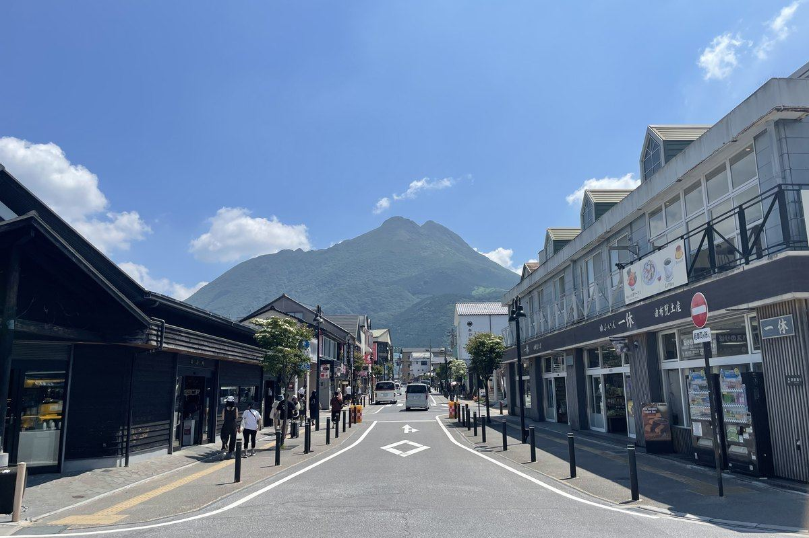
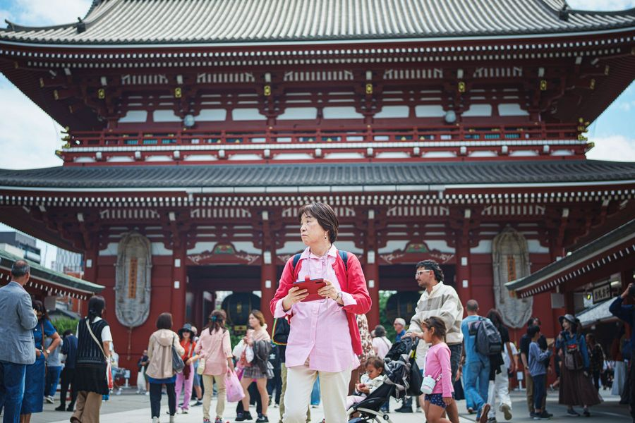
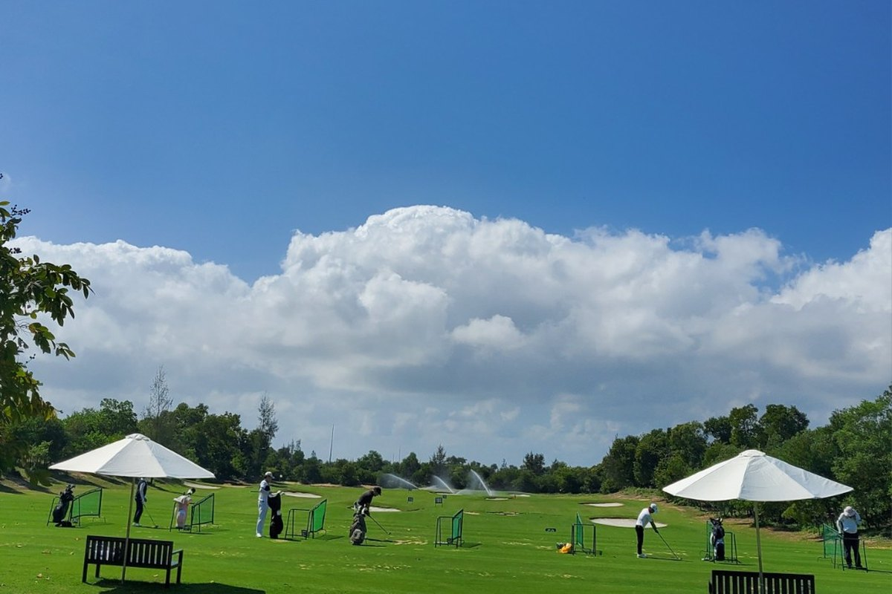

예약 전에 숫자로 확인하는 여행 가이드
교통패스 본전, 현장 추가금, 우기·성수기 변수, 공항에서 시내까지 실제 요금. 상품 상세페이지를 하나씩 옮겨 적으면서 확인한 값으로 계산했습니다. 광고 문구 대신 손익분기와 실경비를 적었습니다.
표시가에 현장 추가금(입장료·팁·가이드 경비)을 더한 금액으로 비교합니다. 싼 상품이 실제로 싼지 여기서 갈립니다.
주유패스·지하철패스는 “하루 몇 번 타면 본전”을 먼저 계산합니다. 일정이 3일이어도 매일 타지 않으면 손해입니다.
모든 글에 확인 날짜와 환율을 적었습니다. 요금은 개정되므로 결제 직전에 공식 안내를 한 번 더 확인하세요.
맛집·미식
실제 영업 중인 가게만, 공식 메뉴판 가격과 영업시간·휴무까지 확인했습니다. 하루 동선(투어→식사→선물→숙소)까지 같이 계산합니다.

오사카 도톤보리·난바·우메다 맛집 5선 (한 끼 8,300원부터)
도톤보리·난바·우메다에서 실제로 영업 중인 다섯 곳. 공식 메뉴판 가격과 원화 환산, 휴무·대기·결제 함정, 그리고 오전 투어 뒤 점심·선물·숙소로 이어지는 하루 시간표를 정리했습니다.

도쿄 츠키지·신주쿠·시부야 맛집 5선 (아침 8,500원부터)
츠키지 장외시장 아침 6시 반부터 신주쿠 츠케멘, 시부야 스시까지. 13:30에 닫는 가게와 10시에 대기표를 뿌리는 가게를 시간표로 묶었습니다.

다낭 미케비치·한시장·호이안 맛집 5선 (세 끼 2만원)
반미 1,400원, 카오러우 1,900원, 해산물 1인 11,000원. 한시장·미케비치·호이안을 하루에 잇는 순서와 해산물 계산서에서 돈 새는 지점을 정리했습니다.
타이베이 융캉제·시먼딩·야시장 맛집 5선 (아침 2,200원)
푸항도우장 50대만달러, 아쭝몐셴 65대만달러, 융캉 우육면 220대만달러. 5:30에 열고 월요일에 쉬는 집들을 시간표로 묶고, 딘타이펑 원점이 포장 전용이 된 것까지 반영했습니다.
일본
교통패스 손익분기와 공항→시내 이동, 우기·성수기 변수까지 일본 일정의 숫자를 정리했습니다.

오사카·교토 3박4일 실경비 187만원 내역
11월 단풍 시즌, 인천 출발 3박4일 2인 기준. 항공·숙소·교통패스·식비·현장 추가금을 실제 판매가로 계산하고, 줄일 수 있는 항목과 줄이면 안 되는 항목을 갈랐습니다.

오사카 주유패스 본전 계산 (2026년판 3,500엔)
2026년판 1일권 3,500엔, 2일권 5,000엔. 하루를 24시간이 아니라 새벽 3시에 끊는 규칙, 시설 1회 제한, 국내 판매가와 엔화 정가의 차이까지 실제 계산으로 정리했습니다.
도쿄 지하철 패스 24·48·72시간 손익분기
24시간 800엔·48시간 1,200엔·72시간 1,500엔. 첫 개찰 시각부터 시간이 도는 구조, JR·버스가 안 되는 함정, 나리타에서 시내까지 교통까지 한 표에 정리했습니다.
도쿄 후지산 당일투어 vs 직접 가기
같은 ‘후지산 당일투어’인데 48,800원부터 200,000원대까지 있습니다. 가격 차이를 만드는 건 명소 수가 아니라 이동 시간과 귀환 시각입니다. 직접 가는 경우의 버스·열차 요금도 함께 계산했습니다.

후쿠오카→유후인, 기차 6,130엔 vs 버스 3,250엔
전 좌석 지정석이라 좌석이 열리는 시각이 정해져 있습니다. 예약 오픈 시각, 만석일 때 대안, 료칸 온천세와 유후인 버스패스까지 실제 금액으로 정리했습니다.

삿포로 겨울 방한 준비물과 예산
눈축제 시즌 삿포로의 실제 기온과 체감, 미끄럼 방지 스파이크의 필요성, 방한 예산 15만원 내역, 눈길에서 늦어지는 이동 시간까지 정리했습니다.

나리타·하네다에서 우에노·신주쿠 (1,060엔~3,600엔)
나리타에서 우에노까지 1,060엔, 신주쿠까지 3,600엔. 스카이라이너·N'EX·게이세이 본선·리무진버스를 2인 왕복 총액으로 놓고, 하네다는 숙소 동네별로 정답을 갈랐습니다.

교토 버스투어 vs 자유일정 (2인 160,900원 vs 91,300원)
버스투어 56,050원에 입장료·점심을 더하면 2인 160,900원, 자유일정은 91,300원. 7만 원 차이와 하루 네 곳을 도는 현실, 교토 1일권 1,100엔 손익분기를 함께 계산했습니다.

비에이 겨울 투어 75,050원과 눈축제 2월 4~11일
2027 삿포로 눈축제는 2월 4~11일. 비에이 겨울 버스투어 5만 원대부터 8만 원대까지 차이, JR로 직접 가는 2인 115,100원, 청의호수 라이트업 기간과 정기관광버스 2,000엔까지 정리했습니다.

간사이공항→USJ, 1,210엔 vs 86,900원
JR 1,210엔, 리무진버스 1,800엔, 단독차량 86,900원. 2인·4인 왕복 총액과 리무진버스 17:10 막차, USJ 입장권 8,400엔부터 오르는 수요 연동 가격까지 계산했습니다.
오사카 2박3일 패키지 61만 vs 77만
대구 출발 775,903원과 인천 출발 616,550원, 자유여행 568,200원. 15만 9천 원 차이의 정체와 2박3일의 실제 관광 시간 1.5일, 두 상품의 정반대 취소 규정을 비교했습니다.

도쿄 4일 80만 6,550원 vs 3일 96만 9,030원
1박이 적은 상품이 16만 2,480원 더 비쌉니다. 김해 출발 노선의 공급 때문인데, 후지산 투어·스카이라이너·메트로 패스를 더한 1인 실지출까지 계산했습니다.
일본 선물·기념품 리스트 (돈키호테·면세 환급 2026)
2026년 11월 1일부터 일본 면세가 리펀드 방식으로 바뀌었습니다. 세금 포함으로 결제하고 출국할 때 세관 키오스크에서 돌려받는 절차, 그리고 시로이코이비토·로이스·휴족시간·동전파스·이치란의 2026년 11월 정가와 구매처를 정리했습니다.
국내
제주·부산·강원은 요일과 시간대에 따라 같은 상품도 값이 달라집니다. 그 차이를 계산했습니다.

제주 3박4일 동선과 실비 (요일로 19만원 차이)
2인 3박4일 기준 65만원부터 160만원까지. 항공·숙소·렌터카·식비를 요일별로 비교하고, 동/서/남부를 어떻게 끊어야 하루에 두 번 왕복하지 않는지 정리했습니다.

부산 요트투어 시간대 고르기 (17,000원 vs 249,000원)
같은 광안리 출발인데 14배 차이가 납니다. 일몰·야경 시간대별로 무엇이 보이는지, 합승과 단독의 실제 차이, 크루즈 8,000원과 비교까지 정리했습니다.

강원 스키장 4곳 비교 (리프트 76,000원~111,000원)
알펜시아 주간 76,000원, 용평 96,000원, 비발디 7시간 주말 99,000원, 하이원 종일 111,000원. 리프트만 비교하면 놓치는 셔틀·렌탈·숙박까지 총액으로 계산했습니다.

울릉도·독도 2박3일 (46만 9천 vs 개별 44만)
묵호 왕복 65,500원×2에 유류할증료 23,000원. 독도 유람선 70,800원, 숙소·차량까지 더하면 1인 444,800원입니다. 패키지 469,000원과 비교하고, 결항 대비와 복귀 편 시각까지 정리했습니다.

강릉 당일치기 KTX+버스투어 189,400원 (2인)
서울역 KTX 27,600원, 청량리 26,000원, 상봉 25,600원. 강릉 안에서 버스투어 39,500원을 쓸지 시내버스 1,530원을 쓸지, 2인 총액 6만 6,760원 차이로 계산했습니다.

제주 15만·18만·43만원, 2박3일 세 상품의 차이
1박당 79,500원·63,000원·219,500원. 3박 4일이 1박당 가장 싼 이유와, 에어카텔 43만 9,000원에 든 그랜드하얏트·렌터카, 세 상품 모두 비어 있는 취소 규정까지.
동남아
우기와 공항 이동, 그리고 패키지의 숨은 비용까지. 동남아에서 총액이 갈리는 지점을 계산했습니다.
다낭·호이안 11월 우기 실전 (바나힐 3일권)
11월 강수량 486mm, 비 오는 날 21일. 호이안 침수, 바나힐 케이블카 중단, 공항 픽업 요금까지. 우기에 일정이 무너지지 않게 짜는 순서를 정리했습니다.

방콕 수완나품 공항에서 시내까지 (45밧 vs 500밧)
공항철도 45밧은 싸지만 환승이 붙고, 택시는 50밧 할증과 통행료가 따로 붙습니다. 4인·짐 많음·심야 도착까지 상황별로 실제 총액을 계산했습니다.

방콕 3박5일 66만·92만·108만 실지출
591,603원 상품에 경비 50달러를 더하면 661,603원. 920,530원 상품의 $230 혜택 내역, 쇼핑 3회가 사라지는 3시간, 29일 전부터 30%인 취소 규정까지 세 상품을 실지출로 비교했습니다.

베트남 eSIM 200원 vs 로밍 9,900원
매일 500MB eSIM이 200원, 3일 무제한이 17,850원입니다. 2인 5일 총액 2,000원과 통신사 로밍 99,000원을 비교하고, 500MB로 그랩·지도가 되는지와 설치 실패 이유를 정리했습니다.

다낭 54홀 vs 푸꾸옥 36홀, 홀당 1만 5,642원 차이
표시가 3만 3,400원 차이인 두 골프 패키지. 캐디팁·가이드팁·중식까지 넣은 실지출과 홀당 단가, 2인·4인 총액, 50일 취소 규정을 계산했습니다.

나트랑 달랏 투어 5만 4,905원 vs 자유여행 총액
달랏 14시간 투어 54,905원에 든 것과, 나트랑 5일 패키지 68만 7,730원·자유여행 73만 2,350원의 4만 4,620원 차이를 조합별 총액으로 계산했습니다.
베트남 다낭 기념품 리스트 (한시장·롯데마트 시세)
한시장 시세와 롯데마트 정찰가를 같은 품목으로 나란히 놓았습니다. 캐슈넛 500g 9만~11만동, 건망고 10만~12만동, G7 3만 4천동. 흥정 폭 15~20%와 위조품·검역 주의까지 정리했습니다.

태국 방콕 기념품 리스트 (빅씨·야돔·의약품 6병)
건망고 140g 129밧, 야돔 23밧, 타이거밤 10g 58밧, 차트라뮤 400g 90밧. 빅씨 랏차담리점과 로터스·왓슨스 가격을 같은 기준으로 놓고, 의약품 6병 기준과 2,000밧 택스리펀을 정리했습니다.
준비물·경비
출발 전에 사는 것과 현지에서 사는 것, 총액이 어떻게 달라지는지 비교합니다.
일본 eSIM·유심·포켓와이파이 총액 비교
4일 2인 기준으로 세 방식의 총액을 계산했습니다. 매일 500MB 제한형과 완전 무제한형이 언제 갈리는지, 테더링이 필요한 순간, 도착 전에 설치해야 하는 이유까지 정리했습니다.

보조배터리 2개·액체 100ml, 2026년 4월에 바뀐 기내 규정
2026년 4월 20일부터 1인 2개·160Wh 이하·기내 충전 금지. mAh를 Wh로 바꾸는 계산, 액체류 100ml·1L 지퍼백, 우기·겨울 여행지별 짐과 준비물 8종 가격까지.
대만·괌
짧은 비행으로 가는 두 곳은 '무엇이 포함됐나'로 총액이 갈립니다. 조식·패스·현장 입장료까지 넣어 계산했습니다.
타이베이 예스진지 2인 105,200원
투어 35,000원에 예류 120NT·천등 150NT·광부체험 50NT·황금박물관 80NT가 붙습니다. 2인 105,200원, 같은 코스 11,400원 상품과의 차이, 겨울 강수일 19일까지 정리했습니다.

괌 리조트 3곳, 조식·패스까지 실지출
리가로얄 581,030원(룸온리), PIC 792,490원(골드패스), 두짓타니 949,630원(전일정 조식). 조식 4일 2인 25만 원을 넣은 실질 비교와 9일 전부터 환불 불가인 취소 규정까지 정리했습니다.
대만 펑리수·기념품 리스트 (치아더·유통기한 40일)
치아더 12개입 456대만달러, 써니힐스 10개입 550대만달러. 같은 치아더도 까르푸 520, 편의점 550으로 갈립니다. 유통기한 40일과 15일의 차이, 부서짐 방지, 돼지기름 과자 검역까지 정리했습니다.
유럽·장거리
장거리 패키지는 표시가에 가이드 경비가 빠져 있습니다. 유로 경비까지 더한 실지출로 비교합니다.

이탈리아 9일 3상품 실지출 289만·305만·325만
274만·290만·310만 원 상품 모두에 가이드 경비 €90(14만 5,800원)이 붙습니다. 실지출 289만·305만·325만 원으로 다시 놓고, 쇼핑 3회 하루와 8박·7박의 차이를 계산했습니다.

스페인·포르투갈 9일 vs 11일, 2박에 76만 4,460원
8박 9일 280만 5,240원과 10박 11일 352만 1,100원. 가이드 경비 €90·€120까지 넣은 실지출과 하루·1박당 단가, 20일 전 취소 위약금까지 계산했습니다.

서유럽 4개국 10일, 표시가 369만 5,500원의 실지출 392만 7,500원
표시가 369만 5,500원에 가이드·기사 경비 €100과 영국 ETA가 붙어 392만 7,500원. 하루당 39만 2,750원을 유럽 9일 상품 3개와 나란히 비교했습니다.

미서부 4대캐년 9일, 현장에서 33만 5,120원이 더 붙습니다
표시가 320만 30원에 기사·가이드 경비 $196과 ESTA가 붙어 353만 5,150원. ESTA를 직접 받을 때와 대행할 때의 차이, 렌터카로 직접 도는 경우의 준비물을 정리했습니다.
미동부·캐나다 10일, 항공사만 다른 두 상품 58만 2,000원 차이
일정·호텔이 같고 항공사만 다른 두 상품. 실지출 554만 9,430원과 613만 1,430원, 두 상품 모두에 붙는 31만 2,400원, 안내에 없는 캐나다 eTA까지 정리했습니다.

호주·뉴질랜드 10일, ETA·NZeTA 11만 7천원이 상품가 밖
표시가 388만 5,500원에 호주 ETA와 뉴질랜드 NZeTA가 붙어 400만 2,500원. IVL 포함 NZeTA 계산과 남반구 계절, I 타입 플러그 준비물까지 정리했습니다.

하와이 8일 vs 7일, 1박 차이 1만 9,400원인데 취소는 다릅니다
표시가 차이 1만 9,400원, 실지출 차이 11만 8,800원. 20일 전 취소 위약금이 15%와 50%로 갈리는 두 상품을 객실·일정·ESTA까지 비교했습니다.
중국
장가계·원가계는 노팁·노옵션이어도 특별약관과 최소 인원이 따로 붙습니다. 예약금 환불 조건과 무사증 시한부터 확인하세요.
검색어를 줄이거나 필터를 ‘전체’로 바꿔 보세요. 예: 오사카 · eSIM · 우기 · 리조트 · 패스